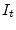
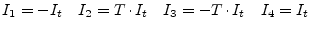
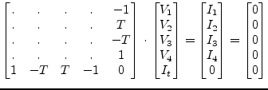
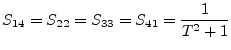
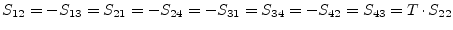
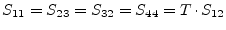

The two winding ideal transformer, as shown in fig. 9.2, is determined by the following equation which introduces one more unknown in the MNA matrix.
The new unknown variable  must be considered by the four remaining simple equations.
|  | (9.25) |
And in matrix representation this is for DC and for AC simulation:
|  | (9.26) |
It is noticeable that the additional row (part of the C matrix) and the
corresponding column (part of the B matrix) are transposed to each
other. When considering the turns ratio  being complex introducing
an additional phase the transformer can be used as phase-shifting
transformer. Both the vectors must be conjugated complex transposed
in this case.
being complex introducing
an additional phase the transformer can be used as phase-shifting
transformer. Both the vectors must be conjugated complex transposed
in this case.
Using the port numbers depicted in fig. 9.2, the
scattering parameters of an ideal transformer with voltage
transformation ratio  (number of turns) writes as follows.
(number of turns) writes as follows.
|  | (9.27) |
|  | (9.28) |
|  | (9.29) |
An ideal transformer is noise free.